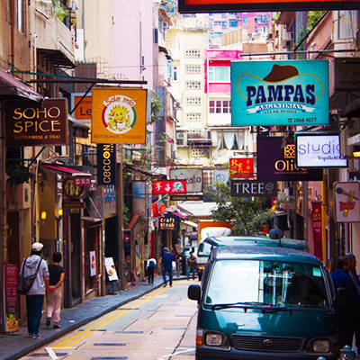
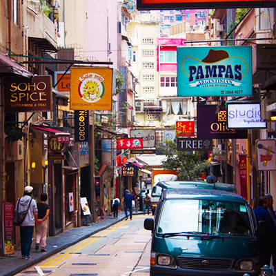
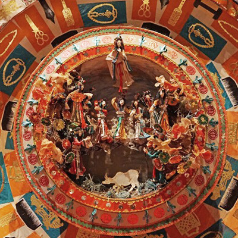

home>여행코스>가족 코스
가족 코스
DAY 1:홍콩 맛보기
-
13:00할리우드 로드 -
13:30미드레벨 에스컬레이터 

-
14:00소호 
 

-
16:00빅토리아 피크(마담투소 박물관) 

아이와 함께하는 여행에서 가장 중요한 것은 아이의 기분이다. 우선 할리우드 로드를 걸어보자. 아이들이 좋아할만한 물건이 많아 함께 구경하기 좋다. 걷다가 지칠 때 쯤 미드레벨 에스컬레이터로 향한다. 아이들의 기분을 좋게 해주는 방법은 간단하다. 뭐든 탈 것이 있으면 된다. 길게 뻗은 미드레벨 에스컬레이터로 놀이기구 느낌을 나게 해준다. 문화교육도 할 겸 만모 사원에 들러마음을 가라앉힌 뒤, 아이가 지칠 때쯤 피크 트램을 이용해 빅토리아 피크로 향해보자. 피크타워 지하의 마담 투소에서 기념촬영을 하고 첫 날 일정을 마친다.
DAY 2:테마파크
-
10:00디즈니랜드
디즈니랜드는 남녀노소를 막론하고 모두 즐길 수 있는 테마파크다. 동심의 세계를 옮겨놓은 디즈니랜드에서 하루를 몽땅 써버리자. 사실 하루가 부족할지도 모른다. 그러니 디즈니랜드에가는 날은 하루 모두를 쓸 각오로 가는 것이 좋다. 재밌는 놀이기구와 흥미로운 테마관을 즐기다 보면 내일도 디즈니랜드로 와버리고 싶은 충동이 일어날지도 모른다. 여유가 된다면 디즈니랜드에 있는 호텔에서 숙박하며 즐기는 것도 좋은 방법이다.
DAY 3:박물관&공원
-
10:00홍콩역사박물관  -
12:00홍콩과학박물관 -
14:00구룡 공원 
침사추이의 홍콩 역사박물관과 홍콩과학박물관은 가까운 거리에 있어 함께 둘러보기 좋다. 홍콩역사박물관 2층 100년전 홍콩거리를 재현한 테마관에서 재밌는 기념사진을 남긴 뒤, 홍콩과학박물관을 체험해보자. 여행의 마무리는 공원 산책. 구룡공원 내부에 입점해있는 맥도날드에서 아이스크림 하나씩 사들고 공원을 거닌다.